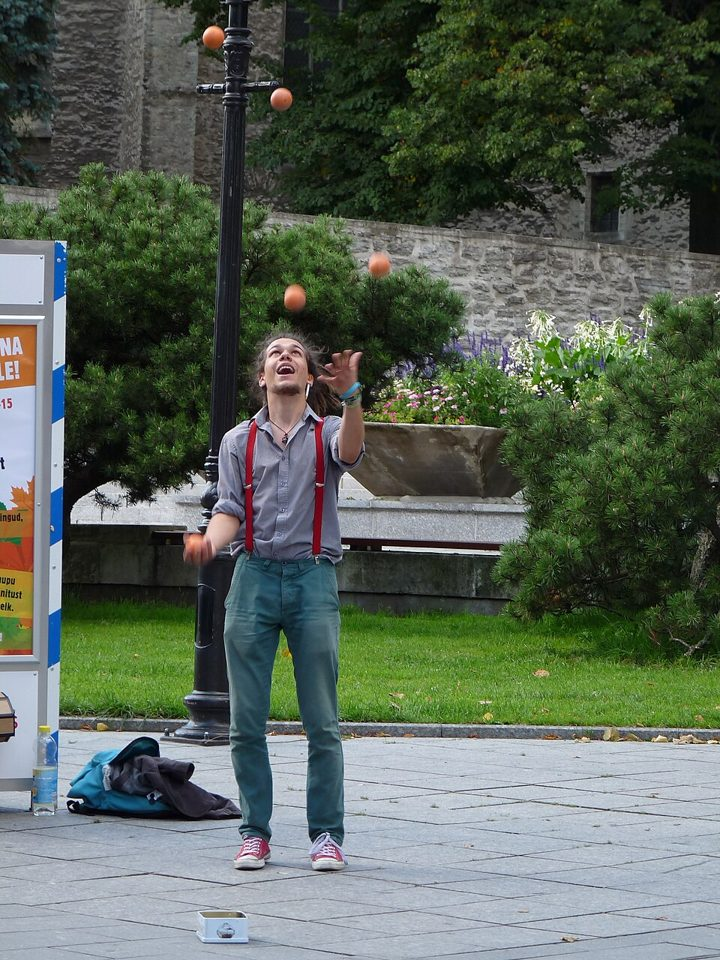
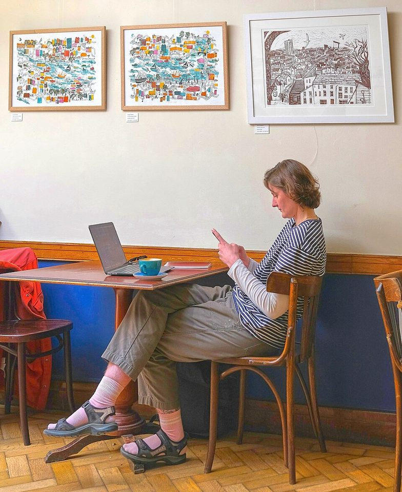
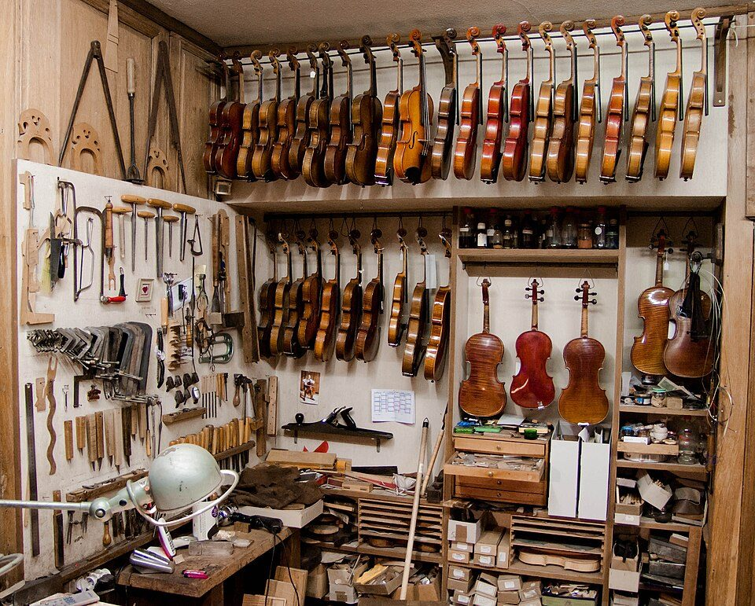
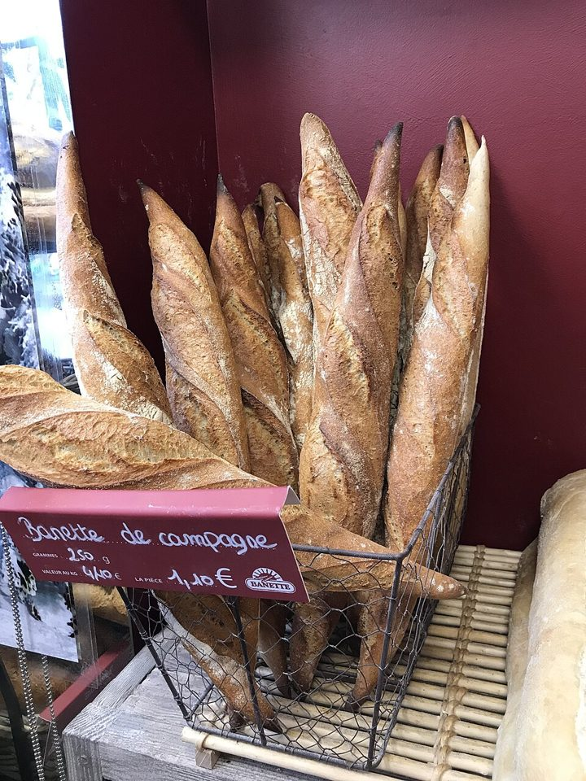
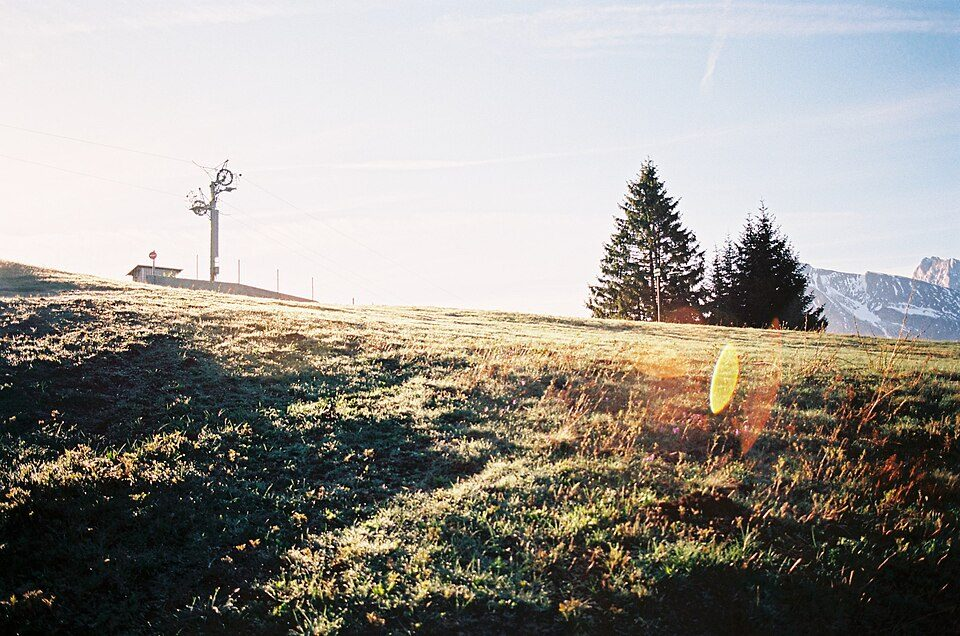
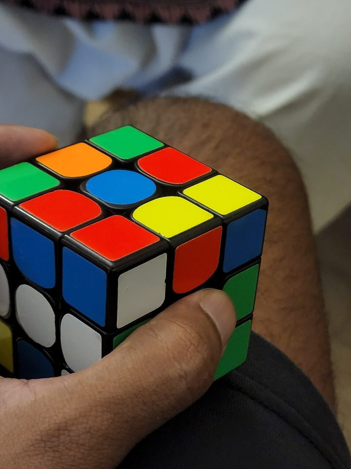
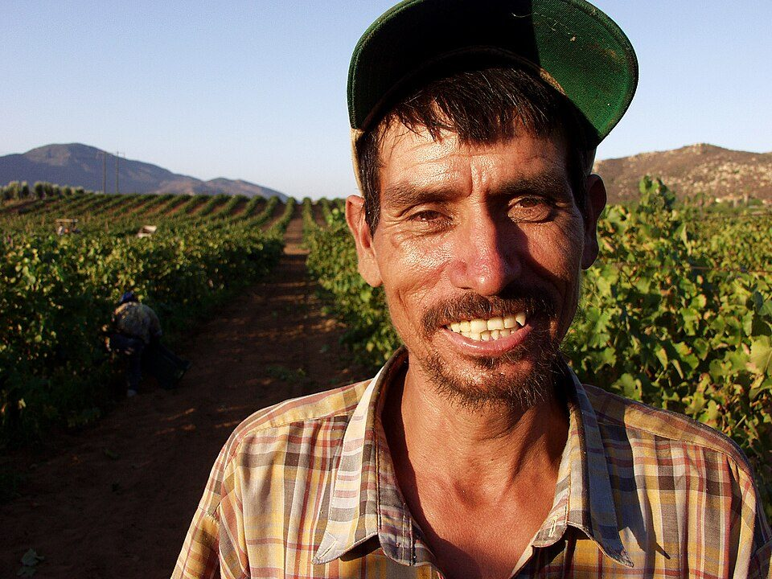
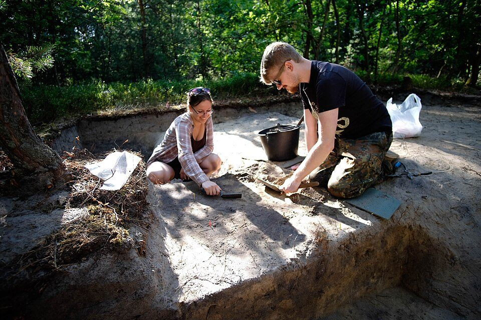
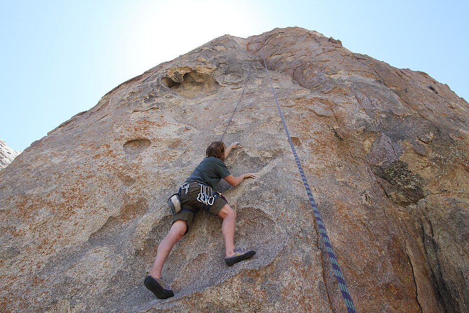

ANDREI · mardi 24 novembre 2026
Vocabulaire, expressions et grammaireSe fier à quelqu'un, faute de, il va de soi, mieux que quiconqueTrusting someone, for lack of, it goes without saying, better than anyone
Les gorges du Verdon et le lac de Sainte-Croix · Provence
Andrei, voici votre leçon : treize mots et expressions, quatre points de grammaire, trois exercices et une réflexion. Touchez une carte pour la retourner, 🔊 pour écouter et EN pour la traduction.
Andrei, here is your lesson: thirteen words and expressions, four grammar points, three exercises and a reflection. Tap a card to flip it, 🔊 to listen and EN for the translation.
1
Vocabulaire et expressions
Vocabulary and expressions
les capacités
nom féminin, souvent au pluriel
feminine noun, often plural
Un grimpeur en compétition d'escalade
↻ toucher pour retourner · tap to flip
les capacités · abilities, skills · capacity
Les capacités d'une personne, c'est ce qu'elle est capable de faire. On dit : avoir des capacités, développer ses capacités, être au-dessus de ses capacités.
A person's capacités are what they are able to do. We say: to have abilities, to develop one's abilities, to be beyond one's abilities.
Cet exercice est encore au-dessus de mes capacités.
This exercise is still beyond my abilities.
Le sport aide les enfants à développer leurs capacités de concentration.
Sport helps children to develop their powers of concentration.
Au singulier, la capacité d'une salle = le nombre de places : une salle d'une capacité de 300 personnes.
In the singular, la capacité of a room = the number of seats: a room with a capacity of 300 people.
↻

en même temps
locution adverbiale
adverbial phrase
Un jongleur dans une rue piétonne
↻ toucher pour retourner · tap to flip
en même temps · at the same time · mind you, then again
Deux sens : 1. simultanément ; 2. à l'oral, pour ajouter une nuance, comme mais d'un autre côté.
Two meanings: 1. simultaneously; 2. in speech, to add a nuance, like 'but on the other hand'.
Je ne peux pas écouter la radio et écrire en même temps.
I can't listen to the radio and write at the same time.
Ce restaurant est un peu cher. En même temps, c'est le meilleur de la ville.
This restaurant is a bit expensive. Then again, it's the best in town.
↻

il est possible de · il est possible que
tournure impersonnelle
impersonal structure
Travailler sur Internet depuis un café
↻ toucher pour retourner · tap to flip
il est possible de · il est possible que · it is possible to… · it is possible that…
Il est possible de + infinitif : une possibilité générale. Il est possible que + subjonctif : une possibilité pour une personne précise. Voir la grammaire, point 1.
Il est possible de + infinitive: a general possibility. Il est possible que + subjunctive: a possibility for a specific person. See grammar, point 1.
Aujourd'hui, il est possible d'apprendre une langue sur Internet.
Today, it is possible to learn a language on the Internet.
Il est possible qu'Internet change encore notre façon de travailler.
It is possible that the Internet will change the way we work again.
↻
une bonne opportunité
nom féminin
feminine noun
Un TGV à quai, gare de Lyon · Paris
↻ toucher pour retourner · tap to flip
une bonne opportunité · a good opportunity
On dit : saisir une opportunité, rater une opportunité, une opportunité à ne pas manquer. À l'oral, on dit aussi souvent une occasion.
We say: to seize an opportunity, to miss an opportunity, an opportunity not to be missed. In speech, people also often say une occasion.
Internet offre de bonnes opportunités aux petites entreprises.
The Internet offers good opportunities to small businesses.
Ce poste à Lyon, c'est une opportunité à ne pas manquer !
This job in Lyon is an opportunity not to be missed!
↻

mieux que quiconque
locution, registre soutenu
phrase, formal register
L'atelier d'un luthier à Mirecourt, capitale française du violon · Vosges
↻ toucher pour retourner · tap to flip
mieux que quiconque · better than anyone
Quiconque = n'importe qui, personne d'autre. On dit aussi plus que quiconque, moins que quiconque. Voir la grammaire, point 4.
Quiconque = anyone, anybody else. We also say plus que quiconque (more than anyone), moins que quiconque (less than anyone). See grammar, point 4.
Ce luthier connaît le bois mieux que quiconque.
This violin maker knows wood better than anyone.
Tu sais mieux que quiconque ce qui est bon pour toi.
You know better than anyone what is good for you.
↻

il va de soi (que)
expression impersonnelle
impersonal expression
Des baguettes dans une boulangerie de l'Ain
↻ toucher pour retourner · tap to flip
il va de soi (que) · it goes without saying (that)
= c'est évident. C'est une certitude, donc il va de soi que + indicatif. À l'oral : ça va de soi !
= it's obvious. It expresses certainty, so il va de soi que + indicative. In speech: ça va de soi! (of course!)
Il va de soi que vous pouvez me poser des questions à tout moment.
It goes without saying that you can ask me questions at any time.
– Tu viendras à mon anniversaire ? – Ça va de soi !
– Will you come to my birthday? – Of course!
↻
s'étendre sur le sujet
verbe pronominal (3e groupe, comme attendre)
pronominal verb (3rd group, like attendre)
Une conférence dans le grand amphithéâtre de la Sorbonne · Paris
↻ toucher pour retourner · tap to flip
s'étendre sur le sujet · to dwell on the subject, to go into detail
= parler longuement d'un sujet. Très souvent à la forme négative : je ne vais pas m'étendre sur le sujet.
= to talk at length about a subject. Very often in the negative: I won't dwell on the subject.
Le conférencier s'est longuement étendu sur le sujet.
The speaker dwelt on the subject at length.
Je ne vais pas m'étendre sur le sujet : nous en reparlerons demain.
I won't go into detail: we'll talk about it again tomorrow.
Sens concret : s'étendre = s'allonger (s'étendre sur le canapé) ou occuper un espace (la forêt s'étend jusqu'à la mer).
Literal meaning: s'étendre = to lie down (to stretch out on the sofa) or to spread over an area (the forest stretches as far as the sea).
↻

faute de
locution prépositive
prepositional phrase
Une station de ski en été, sans neige · Alpes
↻ toucher pour retourner · tap to flip
faute de · for lack of, for want of
Exprime une cause : l'absence de quelque chose. Faute de + nom sans article, ou faute de + infinitif. Voir la grammaire, point 2.
Expresses a cause: the absence of something. Faute de + noun without an article, or faute de + infinitive. See grammar, point 2.
Faute de neige, la station de ski est restée fermée.
For lack of snow, the ski resort stayed closed.
Faute de temps, je n'ai pas pu finir ce livre.
For lack of time, I couldn't finish this book.
↻

trouver une solution
locution verbale
verbal phrase
Résoudre un Rubik's Cube
↻ toucher pour retourner · tap to flip
trouver une solution · to find a solution
On trouve une solution à un problème. On peut aussi chercher, proposer ou apporter une solution.
You find a solution to a problem. You can also look for, suggest or provide a solution.
Nous avons enfin trouvé une solution à ce problème.
We have finally found a solution to this problem.
Il faut que nous trouvions une solution avant vendredi.
We must find a solution before Friday.
↻

la main-d'œuvre
nom féminin, au singulier
feminine noun, singular
Un vendangeur dans les vignes
↻ toucher pour retourner · tap to flip
la main-d'œuvre · labour, workforce, manpower
= l'ensemble des travailleurs nécessaires pour un travail. On parle de main-d'œuvre qualifiée, d'un manque de main-d'œuvre. Sur une facture, c'est aussi le coût du travail.
= all the workers needed for a job. We talk about skilled labour, a labour shortage. On an invoice, it is also the cost of the work.
Pendant les vendanges, les viticulteurs ont besoin de beaucoup de main-d'œuvre.
During the grape harvest, winegrowers need a lot of labour.
Le garagiste m'a fait payer deux heures de main-d'œuvre.
The mechanic charged me for two hours of labour.
↻

un chantier de fouilles
nom masculin
masculine noun
Des archéologues au travail sur un chantier de fouilles
↻ toucher pour retourner · tap to flip
un chantier de fouilles · an excavation site, a dig
Le lieu où des archéologues creusent pour retrouver des traces du passé. Les fouilles (f. pl.) ; fouiller = creuser ou chercher partout.
The place where archaeologists dig to find traces of the past. Les fouilles = the excavations; fouiller = to dig, or to search everywhere.
Des étudiants travaillent sur un chantier de fouilles près d'Arles.
Students are working on a dig near Arles.
Sur le chantier de fouilles, on a découvert une mosaïque romaine.
On the excavation site, a Roman mosaic was discovered.
Un chantier seul = un lieu de travaux : un chantier de construction.
Un chantier on its own = a work site: a building site.
↻

se fier à quelqu'un, à quelque chose
verbe pronominal (1er groupe)
pronominal verb (1st group)
Un grimpeur assuré par la corde de son partenaire
↻ toucher pour retourner · tap to flip
se fier à quelqu'un, à quelque chose · to trust, to rely on
= faire confiance à. Toujours avec à : se fier à quelqu'un, à son instinct. Attention aux pronoms : voir la grammaire, point 3.
= to trust. Always with à: to trust someone, to trust one's instinct. Watch the pronouns: see grammar, point 3.
En montagne, le grimpeur se fie à son partenaire.
In the mountains, the climber relies on his partner.
Ne vous fiez pas aux apparences.
Don't trust appearances.
↻
une idée à creuser
expression (nom + à + infinitif)
expression (noun + à + infinitive)
Une idée sur un papier
↻ toucher pour retourner · tap to flip
une idée à creuser · an idea worth exploring
Creuser = faire un trou (to dig). Au sens figuré, creuser une idée = l'approfondir, l'étudier en détail.
Creuser = to dig a hole. Figuratively, creuser une idée = to explore it in depth, to study it in detail.
Votre proposition est intéressante : c'est une idée à creuser.
Your suggestion is interesting: it's an idea worth exploring.
Il faudrait creuser la question avant de prendre une décision.
We should look into the question before making a decision.
↻
2
Grammaire
Grammar
1 · Possible ou certain ? il est possible de / que · il va de soi que
1 · Possible or certain?
Il est possible de + infinitif
General possibility, no specific subject
On l'utilise pour une possibilité générale, sans sujet précis.
We use it for a general possibility, with no specific subject.
Il est possible de réserver ses billets sur Internet.
It is possible to book your tickets online.
Il est possible que + subjonctif
Possibility for a specific subject
Quand il y a un sujet précis, on emploie que + subjonctif, car c'est seulement une possibilité, pas une certitude.
When there is a specific subject, we use que + subjunctive, because it is only a possibility, not a certainty.
Il est possible que nous trouvions une solution demain.
It is possible that we will find a solution tomorrow.
Il est possible qu'elle ne puisse pas venir.
She may not be able to come.
Il va de soi que + indicatif
Certainty: indicative
Pour une évidence, une certitude, on emploie l'indicatif.
For something obvious or certain, we use the indicative.
Il va de soi que nous trouverons une solution.
It goes without saying that we will find a solution.
Le subjonctif de pouvoir
The subjunctive of pouvoir
Possibilité, doute → subjonctif : il est possible que, il se peut que. Évidence, certitude → indicatif : il va de soi que, il est évident que, il est certain que.
Possibility, doubt → subjunctive: il est possible que, il se peut que. Obviousness, certainty → indicative: il va de soi que, il est évident que, il est certain que.
2 · faute de : exprimer une cause par l'absence
2 · faute de: a cause expressed by absence
Faute de explique pourquoi une chose n'arrive pas : il manque quelque chose. C'est un registre plutôt soigné.
Faute de explains why something does not happen: something is missing. It is a rather careful register.
faute de + nom sans article
faute de + noun, no article
Faute de main-d'œuvre, le chantier a pris du retard.
For lack of labour, the building work fell behind schedule.
Faute d'argent, ils ont renoncé au voyage.
For lack of money, they gave up the trip.
faute de + infinitif (même sujet)
faute de + infinitive (same subject)
Faute d'avoir réservé, nous n'avons pas trouvé de table.
Because we hadn't booked, we couldn't find a table.
Deux expressions figées
Two set phrases
Je n'ai pas trouvé de café, alors j'ai pris un thé, faute de mieux.
I couldn't find any coffee, so I had tea, for want of anything better.
Inscrivez-vous avant lundi, faute de quoi vous n'aurez pas de place.
Register before Monday, otherwise you won't get a place.
| Avec article | Sans article |
|---|---|
| à cause du manque de temps | faute de temps |
| à cause de l'absence de neige | faute de neige |
Faute de contient déjà l'idée de manque : on ne dit pas « faute du manque de temps », mais faute de temps.
Faute de already contains the idea of lack: we don't say 'faute du manque de temps', but faute de temps.
3 · se fier à : conjugaison et pronoms
3 · se fier à: conjugation and pronouns
Présent
Present tense
Passé composé avec être : je me suis fié(e), elle s'est fiée. Imparfait avec deux i : nous nous fiions, vous vous fiiez.
Perfect tense with être: je me suis fié(e), elle s'est fiée. Imperfect with two i's: nous nous fiions, vous vous fiiez.
Une personne → à + pronom tonique
A person → à + stressed pronoun
Je me fie à mon frère. → Je me fie à lui.
I trust my brother. → I trust him.
Tu peux te fier à Claire et Inès. → Tu peux te fier à elles.
You can rely on Claire and Inès. → You can rely on them.
Une chose → y
A thing → y
Je me fie à mon instinct. → Je m'y fie.
I trust my instinct. → I trust it.
Ne vous fiez pas à la météo. → Ne vous y fiez pas.
Don't rely on the weather forecast. → Don't rely on it.
Avec un verbe pronominal, on ne peut pas employer lui ou leur devant le verbe. On garde à + pronom tonique : se fier à lui, s'intéresser à elle, s'adresser à eux.
With a pronominal verb, lui or leur cannot go before the verb. Keep à + stressed pronoun: se fier à lui, s'intéresser à elle, s'adresser à eux.
4 · quiconque · nom + à + infinitif
4 · quiconque · noun + à + infinitive
mieux / plus / moins que quiconque
better / more / less than anyone
Elle connaît ce dossier mieux que quiconque.
She knows this file better than anyone.
Il déteste le retard plus que quiconque.
He hates lateness more than anyone.
quiconque + verbe = toute personne qui
quiconque + verb = anyone who, whoever
Le verbe est à la 3e personne du singulier.
The verb is in the 3rd person singular.
Quiconque a visité ce chantier de fouilles comprend son importance.
Anyone who has visited this dig understands its importance.
nom + à + infinitif = qui doit être…
noun + à + infinitive = which must be…
Cette structure indique ce qu'il faut faire avec la chose : une idée à creuser, un problème à résoudre, une opportunité à saisir, un livre à lire.
This structure shows what must be done with the thing: an idea to explore, a problem to solve, an opportunity to seize, a book to read.
C'est une opportunité à saisir : ne la laissez pas passer !
It's an opportunity to seize: don't let it slip by!
3
Exercices
Exercises
01
EXERCICE 1 · VOCABULAIRE
Choisissez le mot ou l'expression qui convient.
Choose the right word or expression.
1
Je ne peux pas conduire et téléphoner ______.
I can't drive and phone at the same time.
Je ne peux pas conduire et téléphoner en même temps.
I can't drive and phone at the same time.
2
______ main-d'œuvre, l'usine a dû refuser des commandes.
For lack of labour, the factory had to turn down orders.
Faute de main-d'œuvre, l'usine a dû refuser des commandes.
For lack of labour, the factory had to turn down orders.
3
Ma grand-mère connaît l'histoire de notre famille ______.
My grandmother knows our family history better than anyone.
Ma grand-mère connaît l'histoire de notre famille mieux que quiconque.
My grandmother knows our family history better than anyone.
4
Ce poste à Montréal, c'est une ______ à ne pas manquer !
This job in Montreal is an opportunity not to be missed!
Ce poste à Montréal, c'est une opportunité à ne pas manquer !
This job in Montreal is an opportunity not to be missed!
5
Nous n'avons que cinq minutes : je ne vais pas ______ sur le sujet.
We only have five minutes: I won't dwell on the subject.
Nous n'avons que cinq minutes : je ne vais pas m'étendre sur le sujet.
We only have five minutes: I won't dwell on the subject.
6
Ce médecin est excellent : vous pouvez vous fier ______.
This doctor is excellent: you can trust him.
Ce médecin est excellent : vous pouvez vous fier à lui.
This doctor is excellent: you can trust him.
7
Votre projet est original : c'est une idée ______.
Your project is original: it's an idea worth exploring.
Votre projet est original : c'est une idée à creuser.
Your project is original: it's an idea worth exploring.
8
______ que vous serez payé pour les heures supplémentaires.
It goes without saying that you will be paid for overtime.
Il va de soi que vous serez payé pour les heures supplémentaires.
It goes without saying that you will be paid for overtime.
02
EXERCICE 2 · CONJUGAISON
Lisez l'histoire et conjuguez le verbe au temps indiqué.
Read the story and conjugate the verb in the tense given.
Un été à Bibracte · A summer at Bibracte
décider · passé composé
1
L'été dernier, Clara ______ de participer à un chantier de fouilles à Bibracte, en Bourgogne.
Last summer, Clara decided to take part in a dig at Bibracte, in Burgundy.
L'été dernier, Clara a décidé de participer à un chantier de fouilles à Bibracte, en Bourgogne.
Last summer, Clara decided to take part in a dig at Bibracte, in Burgundy.
chercher · imparfait
2
Faute de main-d'œuvre, les archéologues ______ des bénévoles.
For lack of labour, the archaeologists were looking for volunteers.
Faute de main-d'œuvre, les archéologues cherchaient des bénévoles.
For lack of labour, the archaeologists were looking for volunteers.
devoir · futur simple
3
Le premier jour, le responsable leur a dit : « Il va de soi que vous ______ travailler avec beaucoup de soin. »
On the first day, the manager told them: 'It goes without saying that you will have to work very carefully.'
Le premier jour, le responsable leur a dit : « Il va de soi que vous devrez travailler avec beaucoup de soin. »
On the first day, the manager told them: 'It goes without saying that you will have to work very carefully.'
trouver · subjonctif présent
4
« Et il est possible que vous ne ______ rien pendant des semaines ! »
'And you may well find nothing for weeks!'
« Et il est possible que vous ne trouviez rien pendant des semaines ! »
'And you may well find nothing for weeks!'
s'étendre · imparfait
5
Pendant les pauses, Clara et son amie Inès ______ à l'ombre des chênes.
During the breaks, Clara and her friend Inès would stretch out in the shade of the oak trees.
Pendant les pauses, Clara et son amie Inès s'étendaient à l'ombre des chênes.
During the breaks, Clara and her friend Inès would stretch out in the shade of the oak trees.
découvrir · passé composé
6
Un matin, Inès ______ une petite pièce de monnaie gauloise.
One morning, Inès discovered a small Gaulish coin.
Un matin, Inès a découvert une petite pièce de monnaie gauloise.
One morning, Inès discovered a small Gaulish coin.
se fier · présent
7
« Je ______ à toi : montre-moi exactement où tu l'as trouvée ! » a dit Clara.
'I trust you: show me exactly where you found it!' said Clara.
« Je me fie à toi : montre-moi exactement où tu l'as trouvée ! » a dit Clara.
'I trust you: show me exactly where you found it!' said Clara.
vouloir · présent
8
Aujourd'hui, Clara en est sûre : elle ______ devenir archéologue.
Today, Clara is sure of it: she wants to become an archaeologist.
Aujourd'hui, Clara en est sûre : elle veut devenir archéologue.
Today, Clara is sure of it: she wants to become an archaeologist.
finir · subjonctif présent
9
Mais il faut d'abord qu'elle ______ ses études.
But first she has to finish her studies.
Mais il faut d'abord qu'elle finisse ses études.
But first she has to finish her studies.
repartir · conditionnel présent
10
Si elle le pouvait, elle ______ sur un chantier dès l'été prochain.
If she could, she would go back to a dig as early as next summer.
Si elle le pouvait, elle repartirait sur un chantier dès l'été prochain.
If she could, she would go back to a dig as early as next summer.
03
EXERCICE 3 · TRADUCTION
Traduisez en français, puis comparez avec la correction.
Translate into French, then compare with the correction.
1It goes without saying that I trust you.
Il va de soi que je me fie à toi.
Votre traduction était-elle correcte ? Was your translation correct?
2For lack of time, I won't go into detail.
Faute de temps, je ne vais pas m'étendre sur le sujet.
Votre traduction était-elle correcte ? Was your translation correct?
3Thanks to the Internet, it is possible to learn a language at home.
Grâce à Internet, il est possible d'apprendre une langue chez soi.
Votre traduction était-elle correcte ? Was your translation correct?
4The vineyard lacks labour: we must find a solution.
Le vignoble manque de main-d'œuvre : il faut trouver une solution.
Votre traduction était-elle correcte ? Was your translation correct?
5She knows her own abilities better than anyone.
Elle connaît ses capacités mieux que quiconque.
Votre traduction était-elle correcte ? Was your translation correct?
6It's a good opportunity, but at the same time it's a risk. It's an idea worth exploring.
C'est une bonne opportunité, mais en même temps, c'est un risque. C'est une idée à creuser.
Votre traduction était-elle correcte ? Was your translation correct?
4
Réflexion
Reflection
Le temple d'Apollon à Delphes · Grèce
Se connaît-on mieux que quiconque ?
Do we know ourselves better than anyone?
Sur le temple d'Apollon, à Delphes, les Grecs avaient gravé deux mots : « Connais-toi toi-même ». Il semble aller de soi que personne ne nous connaît mieux que nous-mêmes : nous savons ce que nous pensons, ce que nous désirons, ce qui nous fait peur. Pourtant, il arrive qu'un ami devine nos capacités ou nos défauts avant nous. Faut-il alors se fier d'abord à soi-même, ou aussi au regard des autres ?
On the temple of Apollo at Delphi, the Greeks had carved two words: 'Know thyself'. It seems to go without saying that nobody knows us better than we know ourselves: we know what we think, what we want, what frightens us. And yet a friend sometimes guesses our abilities or our flaws before we do. Should we then trust ourselves first, or also the way others see us?
Pour trouver vos idées · To find your ideas
• Pensez à un moment où vous avez découvert une capacité que vous ne soupçonniez pas. Qui l'a remarquée en premier ?
Think of a time when you discovered an ability you didn't suspect you had. Who noticed it first?
• Pourquoi est-il parfois difficile d'être lucide sur soi-même ? Pensez à l'amour-propre, à la peur, aux habitudes.
Why is it sometimes hard to see ourselves clearly? Think about pride, fear, habits.
• Le regard des autres est-il toujours juste ? Peut-on se fier à tout le monde de la même façon ?
Is the way others see us always fair? Can we trust everyone in the same way?
• Se connaître, est-ce un état ou un travail de toute une vie ?
Is knowing oneself a state, or a lifelong task?
Organisez votre texte · Organise your text
1
Introduction (3 à 4 lignes) · Introduction (3–4 lines)
Partez de la phrase de Delphes et posez la question. Commencez par : « Depuis l'Antiquité, on dit que… »
Start from the Delphi inscription and ask the question. Begin with: « Depuis l'Antiquité, on dit que… »
2
Premier argument (5 lignes) · First argument (5 lines)
Montrez pourquoi nous sommes les mieux placés pour nous connaître. Commencez par : « D'un côté, il va de soi que… »
Show why we are best placed to know ourselves. Begin with: « D'un côté, il va de soi que… »
3
Deuxième argument (5 lignes) · Second argument (5 lines)
Montrez les limites de cette connaissance et le rôle des autres. Commencez par : « En même temps, il est possible que… »
Show the limits of this self-knowledge and the role of others. Begin with: « En même temps, il est possible que… »
4
Conclusion (3 à 4 lignes) · Conclusion (3–4 lines)
Donnez votre avis personnel, avec nuance. Commencez par : « Pour ma part, je pense que… »
Give your personal opinion, with nuance. Begin with: « Pour ma part, je pense que… »
Mots utiles · Useful words
la conscienceawareness, consciousnessse tromper sur soito be wrong about oneselfle regard des autresthe way others see usl'amour-propre (m.)self-esteem, prideun point de vue extérieuran outside point of viewse mentir à soi-mêmeto lie to oneselfla luciditéclear-sightednessprendre du reculto step back, to gain perspective
Défi : utilisez au moins une fois il va de soi que, il est possible que + subjonctif, faute de, se fier à et mieux que quiconque.
Challenge: use at least once il va de soi que, il est possible que + subjunctive, faute de, se fier à and mieux que quiconque.
Votre texte est enregistré automatiquement. Your text is saved automatically. · 0 mot
À revoir · to review
Chaque point renvoie à la règle. · Each point links back to the rule.
📩 Envoyer mes résultats à Irène
Irène reçoit votre score, les points à revoir, vos traductions et votre réflexion. Irène receives your score, the points to review, your translations and your reflection.
Vos réponses restent enregistrées sur cet appareil, même si vous fermez la page. Pour continuer sur un autre appareil, créez un lien et ouvrez-le là-bas.
Your answers stay saved on this device, even if you close the page. To continue on another device, create a link and open it there.